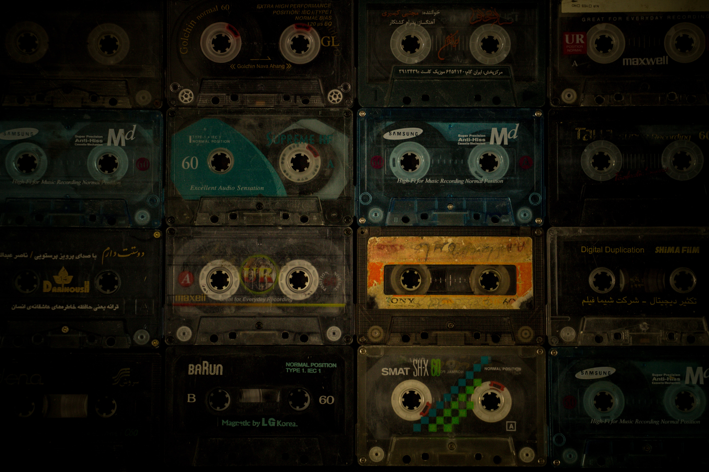

A lifestyle of picking snares
19.07.2021 A journey that started in a time and land long gone. The idea came via an innocent conversation and it had ramifications. The muse had showed up. A boy had fallen in love. The writing could from now on never stop.
The subject matters were embarrasing. The weirdness of existence had been packaged better by the NY rappers. But they also just talked about how dope they were. I can't do that. I haven't even put out a.. you know what? Who gives a sh*. I can just write whatever the f*.
So I write a murder song. Mom says I should write something from my own reality. I write a preachy christian song. The christians don't like it but they can't really say why. One of a milion weird moments with that ideology and it's dead ends. I write love songs. Girls love to hear that. I write to write. I feel something when writing.
It isn't me hoping this will be recognized. It's cleaner. The hope for recognition does visit but as it is never a pleasant presence I brush it off mostly.
I write to write. I write because when I write, everything else disappears. I write to plug into that peace. I leave the imagined world that I'm told is the real one, for a felt world I know I'm connected to. What do I rap these lyrics too? Can I make something simple as sh*?
 There was equipment in the living room. The white el-piano. The mixer. The aux to cassette. It was used. Used more than
was allowed. I wonder what those tapes sound like today. They exist somewhere. But the thought of searching for them feels heavy. The inspiration
there is faulty. Forget 'em. We move on. How should this sound? Well. The snare needs to be awesome. This is what we need to figure out how to make.
A snare that sounded like a NY rapper would like it. How to do that? The drum machine in the living room wasn't the same
as they used I was thinking, after realizing there exist other drum machines this one.
There was equipment in the living room. The white el-piano. The mixer. The aux to cassette. It was used. Used more than
was allowed. I wonder what those tapes sound like today. They exist somewhere. But the thought of searching for them feels heavy. The inspiration
there is faulty. Forget 'em. We move on. How should this sound? Well. The snare needs to be awesome. This is what we need to figure out how to make.
A snare that sounded like a NY rapper would like it. How to do that? The drum machine in the living room wasn't the same
as they used I was thinking, after realizing there exist other drum machines this one.There is an 808 sounding thing here though, hmm.
How about we use a lot of chorus on the rhodez so it complements the snare more? What about the bass?
I'm now ignoring clear instructions from parental authorities. Don't touch the instruments tomorrow. Okay dad. Music made me a liar.
The snares though. Can I EQ these I have to sound like something I want it to sound like?
Ok now I have some songs. Who's supposed to listen to this? hmm... daaad?
Everyone got to hear, and got asked way too many questions. I thank them for setting boundaries without being assholes haha.
Where do I go now? Home studio for me in the beginning was a midi program, a mixer, a recording straight to cassette. Live recordings made to sound like studio recordings. Quality varying greatly. Today the home studio game has changed into a digital sonic heaven where the possibilities are endless. I am thankful. Thankful to the muse. A muse in her feelings. xo